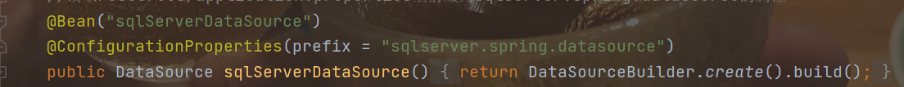

Spring注解
Bean
广义上的Spring注解可以分为两类：
一类注解用于注册Bean：注册Bean的注解的作用就是向IOC容器里放（注册）东西比如@Component、@Repository、@Controller、@Service、@Configration
一类注解用于使用Bean：比如@Autowired、@Resource，如果要使用，必须是IOC容器里有的。
Spring的@Bean注解用于告诉方法，产生一个Bean对象，然后将这个Bean对象交给Spring管理。产生这个Bean对象的方法只会调用一次，然后Spring就会将这个Bean对象放到自己的容器当中。
@Bean明确地指示了一种方法，什么方法呢？产生一个bean的方法，并且交给Spring容器管理；这里也就说明了为什么Bean是放在方法上的注解，因为它很明确地告诉被注释的方法，你给我产生一个Bean，然后交给Spring容器，剩下的你就别管了。记住，@Bean就放在方法上，就是让方法去产生一个Bean，然后交给Spring容器。
Bean注解当中还可以传递参数，用来指定该Bean对象的名称，在调用时配合@Qualifier来使用，因为Autowired是默认按照类去匹配的，当有多个Bean对象对应同一类是，就需要用指定名称的方式来加以区别。

Autowired && Qualifier
该注解可以对类成员变量、方法以及构造函数进行标注，让spring完成自动装配的工作。
Autowired默认是按照类去匹配，但可以配合@Qualifier指定按照名称去装配bean，除此之外， 当对应有多个类时，还可以使用类名小写字母的方式来指定注入 。但@Qualifier的优先级较高。


Component
1、@controller 控制器（注入服务）
用于标注控制层，相当于struts中的action层
2、@service 服务（注入SERVICES）
用于标注服务层，主要用来进行业务的逻辑处理
3、@repository（实现DAO访问）
用于标注数据访问层，也可以说用于标注数据访问组件，即DAO组件.
4、@component （把普通pojo实例化到spring容器中，相当于配置文件中的 <bean />
Component泛指各种组件，就是说当我们的类不属于各种归类的时候（不属于@Controller、@Services等的时候），我们就可以使用@Component来标注这个类。
@Component和@Bean
-
@Component注解表明一个类会作为组件类，并告知Spring要为这个类创建bean。
-
@Bean注解告诉Spring这个方法将会返回一个对象，这个对象要注册为Spring应用上下文中的bean。通常方法体中包含了最终产生bean实例的逻辑。
两者的目的是一样的，都是注册bean到Spring容器中。
区别
@Component（@Controller、@Service、@Repository）通常是通过类路径扫描来自动侦测以及自动装配到Spring容器中。
而@Bean注解通常是我们在标有该注解的方法中定义产生这个bean的逻辑。
@Component 作用于类，@Bean作用于方法
@Configuration
从Spring3.0，@Configuration用于定义配置类，可替换xml配置文件，被注解的类内部包含有一个或多个被@Bean注解的方法，这些方法将会被AnnotationConfigApplicationContext 或 AnnotationConfigWebApplicationContext类进行扫描，并用于构建bean定义，初始化Spring容器。
该类会被CGLIB动态代理生成子类，可以达到这样的效果：在某@Bean方法下调用另一个标注了@Bean的方法，得到的会是同一个Bean对象；
1、
@Configuration注释类表明其主要目的是作为bean定义的源；
@Configuration类允许通过调用同一类中的其他@Bean方法来定义bean之间的依赖关系。
2、@Configuration注解的配置类有如下要求：
- 可以作为Component标签使用
- 标注的类不可以是final类型（final无法动态代理生成子类）
- 注解类里的@Bean对象的id默认是方法名，如果设置了@Bean的name或者value属性，取第一个作为beanId，name中其他的作为别名使用；
- 标注了@Configuration的类不能是普通内部类，如果非要是个内部类，那就静态内部类也是可以的，因为普通内部类依赖于外部类的存在。
3、配置@Configuration和不配置的区别:
在使用@Configuration注解之后，调用@Bean方法产生的实例只会创建一次，与之相依赖的@Bean函数获取的实例也是同一个实例。
不使用@Configuration注解时，实例化对象时，每次会创建新的对象。
举例：


执行之后的结果：（获取的实例为同一个）